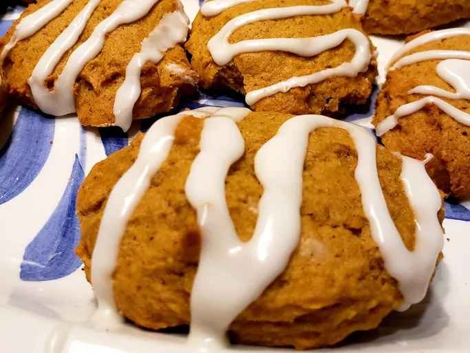

Iced Pumpkin Cookies

The ideal fall cookie
These are the best cookies you will ever eat.
Do you like cookies? You do? How about muffin tops? Perfect. This cookies straddle that line so well you'll become the basic bitch you always knew you were. It's Fall bitch; anytime of year!
What do you need to make these spiced morsels of goddamn delight?
- 2 ½ cups all-purpose flour
- 2 teaspoons ground cinnamon
- 1 teaspoon baking powder
- 1 teaspoon baking soda
- ½ teaspoon ground nutmeg
- ½ teaspoon ground cloves
- ½ teaspoon salt
- 1 ½ cups white sugar
- ½ cup butter, softened
- 1 cup canned pumpkin puree
- 1 large egg
- 1 teaspoon vanilla extract
You thought I was done? We still have the icing to make!
That's right, fucker; buckle up!
- 2 cups confectioners' sugar
- 3 tablespoons milk
- 1 tablespoon melted butter
- 1 teaspoon vanilla extract
Directions
- Preheat the oven to 350 degrees F (175 degrees C). Grease two cookie sheets. Or put some parchment paper down.
- Get your favorite mixing bowl. Combine flour, cinnamon, baking powder, baking soda, nutmeg, cloves, and salt in said bowl.
- Cream together sugar and butter in a mixing bowl until fluffy, 2 to 3 minutes. Add pumpkin, egg, and vanilla; beat until creamy. Mix in flour mixture until combined. Drop tablespoonfuls of dough onto the prepared cookie sheets; flatten slightly.
- Bake in the preheated oven until centers are set, 15 to 20 minutes, switching racks halfway through. Transfer cookies to a wire rack to cool to room temperature, about 30 minutes. Resist the urge to eat them too early.
- Distract yourself from the overwhelming impulse to just eat them like little spice cakes by making the icing. Grab your second favorite mixing bowl.
- Melt the butter in the bowl.Use the microwave for like 20-30 seconds.
- Combine the confectioners sugar, milk, vanilla, and butter.
- Take a second to giggle to yourself because this icing looks like something else. Then get your mind out of the gutter, pervert.
- Do the courteous thing and put a towel down under the cookies.
- Bukkake the cookies with the icing.
- NOW eat the best fucking fall cookies you'll ever eat in your life.
Nutrition Information
HAHAHAHAHAHAHAHAHAHAHAHAHAHAHAHAHAHAHAHAHAHAHA
Original Recipe
Home